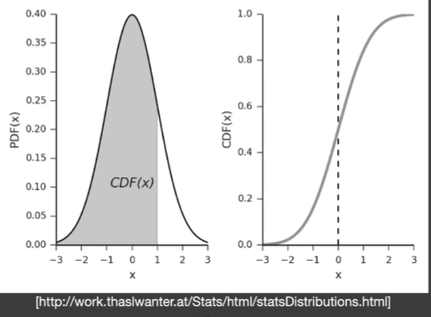

[图形]实时软阴影
Shadow Mapping
- 2 Pass算法（就是说会渲染两次场景）
- 首先从光源生成深度图
- 再从相机渲染一遍，并结合深度图生成阴影
- 图像空间算法
- 好处：不需要场景的几何信息
- 坏处：自遮挡现象，走样
自遮挡

深度图有分辨率，也是个采样（离散）过程，每个像素记录的深度是不连续的（就是图中橙色的那一片，记录的点比实际偏了一点）。之后再从相机出发打到了旁边红点，位置差了一点点，但是shadow map上记录的深度更浅，结果以为光照不到这一点上，出现自遮挡现象
为了解决这个问题，可以假设如果某一小段距离内发现有遮挡现象，就当作它没遮挡（加个bias，bias可以根据光源和平面夹角变动）

但它引入了新问题，如果bias过大会丢失应该生成的阴影
Second-depth shadow mapping
不仅存最小深度，还要存第二小的深度，用最小深度和次小深度的中间深度来做比较

（就是用算出来的mid point）
但是实际上工业界没人用，因为
- 要求所有模型都是watertight，就是模型不能只有一个面（就算一张纸也要有一点点厚度），有正面就要有反面
- 真的实现出来开销很大（虽然是算法但是常数很大）
Visibility with Rendering Equation
乘积的积分等于积分的乘积！（高数老师：挂科）
但是在某些情况下，它们的结果可以近似相等
（除以一个积分是归一化常量，不希望波动太大）
当的积分范围很小，或者函数足够光滑（曲率不大？）时结果会更准确
当把可见性也加入到渲染方程中（就是说物体可能不会被光源照到），并且将可见性拆开来，渲染方程可以改写成
根据公式，可以把可见性从渲染方程中拆出来
什么时候这个渲染方程是准确的？
- 积分上下限小（点光源，平行光）
- 渲染方程足够平滑（uniform的光照，不变，也就是面光源，没有radiance变化，且brdf是diffuse的）
Percentage closer soft shadows (PCSS)

现实中大部分光源是面光源，从有阴影到无阴影会有过度
Percentage Closer Filtering (PCF)
最早pcf最早用于抗锯齿
步骤：
- 对于一个shading point，去shadow map上找该点周围一圈的像素
- 将该点和所有找到的像素做比较，平均一下
- 比如取周围3x3的像素
- 结果是1,0,1 1,0,1 1,1,0
- 平均值是0.667
所以它既不是对最终有锯齿的图操作，也不是对shadow map进行模糊

这样操作会比较慢
PCSS
pcf在采样时，如果只采样一个点，就是硬阴影，什么都没干，如果采样一大堆点，那锯齿也没了，也有软阴影了
那软阴影就是硬阴影做一个采样范围非常大的filter
只要不同位置给个不同的filter范围，是不是就可以做出近实体远虚的效果了
因此filter范围和遮挡物距离有关系

远处光源light（图右上方），中间遮挡物blocker，底部接受阴影receiver
阴影软的程度就是左下角w范围，w越大越软
根据相似三角形可以列出等式
所以PCSS的步骤：
- 搜索一个范围内的blocker，深度记下来取个平均值
- 计算filter大小
- 做pcf
那么搜索blocker的范围要多大呢

把shader point连向light，看在shadow map所占范围来确定，离光源越远，遮挡物也更多
PCSS开销非常大，因为第一步和第三步需要采样区域内深度并比较

点光源产生的是硬阴影
Variance Soft Shadow Map (VSSM/VSM)
VSM是为了解决PCSS第一步和第三步开销过大的问题。
可以看做PCSS的快速版本
加速PCF
我们知道PCSS第三步做PCF时会对一个区域内深度进行比较是否被遮挡，就是区域内有多少像素比该点深还是浅，可以看做对区域内像素排名，知道该点在区域内排第几。为了避免扫描一遍所有成绩，可以使用概率的分布来计算相对准确的排名。
所以只要能拿到区域的平均和方差，就可以立刻算出排名
给定区域，算平均值，就是mipmap，但是它有些其他问题。另一个办法是Summed Area Table
那如何拿到方差呢
一个随机变量的方差等于随机变量平方的期望减去期望的平方
所以生成shadow map的时候可以顺手生成深度的平方

有了平均值和方差可以得到正态分布，通过计算曲线围成面积（CDF）算出多少像素深度比取的点小。
但是CDF很难算。为了计算这个玩意引入切比雪夫不等式（Chebychev’s inequality）（啥？）
这个不等式可以告诉我们，一个随机变量取的值超过某个值的概率，但是又不需要知道随机变量满足的分布，只需要知道期望和方差（黑人问号.jpg）
不等式左边是除了cdf的部分（就上图，概率分布右半边），不会超过不等式右半边
不过呢实时渲染里面，这个不等号被人们认为是约等于，用于估计右半边的面积，所以cdf就是1减去右边面积
不过呢这个不等式还有个条件，要查询的变量必须在均值的右边，如果在左边就不准了
加速查询区域内遮挡物深度
PCSS在第一步会计算范围遮挡物的平均深度，会遍历区域内所有像素。

如果遮挡物的平均深度是Zocc,不是遮挡物的平均深度为Zunocc，可以得到
非遮挡物数量，是遮挡物数量。
其实就是遮挡物和非遮挡物占据的比例，加起来就是平均深度
对应到前面的切比雪夫不等式，也可以直接得出百分比
但是我们不知道非遮挡物的深度，这里假设和shading point一样
快速求矩形区域平均
mipmap就完事了（233
事实上mipmap有很多限制，正方形，2的n次方，还要线性插值
Summed Area Table
我们需要，给定一个范围，立刻得到范围的平均值
范围求和与范围求平均是一回事，知道范围所有值的和，除以个数就是平均
前缀和可以快速求出范围内的和

求二维的前缀和，其实就是右下角矩形 减去 左下角矩形 减去 右上角矩形 再加上 左上角矩形
所以，预计算二维前缀和表，就可以查询平均值
问题
VSSM做了很多假设，当假设不成立的时候就会出错。
假设是正态分布，如果实际上不是就会渲染错误
不是正态分布强行按正态分布算就会出现漏光和过暗的结果。在阴影的承接面不是平面的情况下也会出现阴影断掉的现象。

（车底部漏光）

Moment Shadow Mapping
解决VSSM里描述深度分布不准确的问题，使用更高阶的矩（？）
矩就是记录一个数的所有前n次方是多少，叫做n阶的矩

MSM用了前四阶的矩（就是x，x平方），VSSM是二阶矩
用这么多阶的矩可以表示一个一系列阶跃函数连起来的函数，而且能表示n/2个台阶
有了这个函数，立刻可以恢复出CDF
是一种展开（？）

那怎么从矩转化成曲线呢，可以看论文（
Distance Field Soft Shadows
速度很快
Signed Distance Function (SDF)
（GAMES101有讲过）
定义：空间中任何一个点到某个物体的表面上最近的点的距离
距离可以有正负，符号定义了距离的方向

sdf等于0的时候是物体边界，函数可以插值

Ray Marching
现在假设已经得到了场景的SDF信息，需要用光线和SDF定义的隐式表面求交可以用sphere tracing

- 从某个点向某个方向射出光线
- 计算一次SDF，获取一个距离
（因为SDF记录的是任何一个点到物体表面最近点的距离，所以某一点SDF的值等价于其附近的安全距离，也就是说在这个距离内，不可能撞到任何物体） - 所以光线这次可以前进的距离就是SDF算出来的距离
使用SDF生成软阴影

SDF可以估算观察者安全视角的大小，就是说如果SDF越小，能看到的角度越小，可见性越小，阴影越黑

事实上真的应用中并不会去算角度，因为SDF和到原点的距离已经可以表示角度大小，不用再用反三角函数算一遍
系数可以控制阴影的硬软，越大越硬（
优缺点
- 就是快，比shadow map快（忽略距离场生成）（其实shadow map主要时间是在生成上）
- SDF软阴影不准，但是符合人的观察结果
- 需要预计算，储存（需要空间很大），只能对刚体和静态场景生效
（SDF甚至可以做无限分辨率的字符）